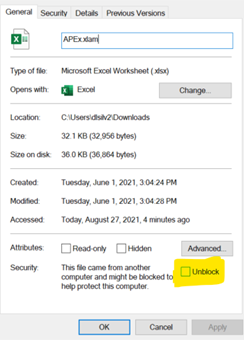
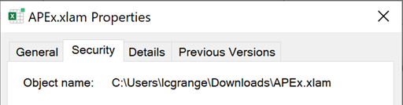
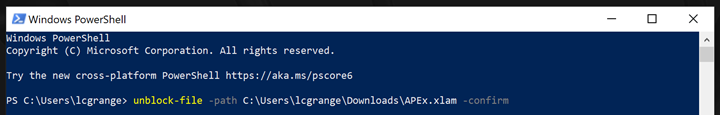
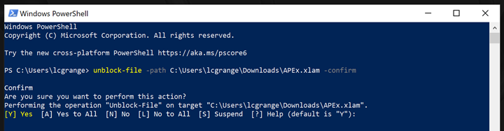

ur
TroubleshootingTips
APEx Troubleshooting Tips Courtesy of Dr. Leah Granger, NC State University
When installing APEx…
*The file MUST have its original name (APEx.xlam).
*To avoid future problems, decide where you want the file permanently located before installing. Many choose to leave it in their downloads folder so it is not accidentally moved later.
As mentioned on the APEx download site, you likely need to unblock the file. If it remains blocked, APEx will only work until you restart Excel, at which point you have to re-add it. If you would like it to always be enabled,
- 
First try to unblock it using the method mentioned on the APEx download site, where you right click the file, click properties, and then click the “unblock” checkbox.
- If that option does not appear, you can do the same thing via command line. First, get the file’s complete object name from that same properties dialog box: switch to the “Security” tab and copy the complete object name.

- Open Windows PowerShell (which is installed by default in every recent version of Windows – you can find it by your windows search).
- Type the following command, replacing the **** with the object name you just copied. You can paste simply by right clicking in Powershell.
unblock-file -path **** -confirm

- Press Enter.

- Read the confirmation prompt, double checking that this is in fact the APEx file. If so,
type Y and press Enter.
APEx should now remain enabled every time you start Excel!
Reutrn to APEx main page